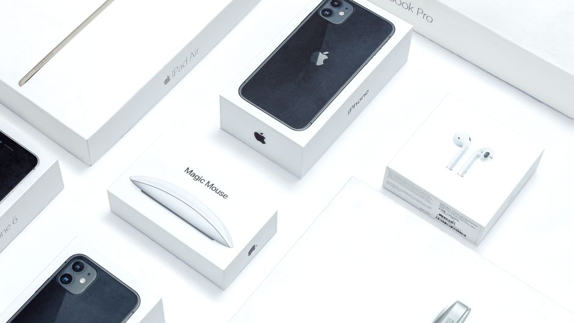

Apple最新情報
iPadを仕事・勉強で使いこなす設定とアクセサリー選び
2026-11-08

iPadは設定とアクセサリーの選び方次第で、仕事や勉強での使い勝手が大きく変わります。今回はiPadOS 26で使える機能と、作業を進めやすくするアクセサリーの選び方を整理しました。
iPadOS 26のステージマネージャで複数アプリを使い分ける
iPadOS 26ではステージマネージャが全てのiPadに対応し、作業中のアプリウインドウを画面中央に配置しながら、最近使ったアプリを画面左側に自動で整列表示してくれるようになりました。最大4つのアプリを同時に開き、ウィンドウの位置やサイズを自由に変更しながら使うこともできます。ノートを書きながらボイスメモで録音したり、PDFを読みながら別のアプリに質問したりといった、仕事や勉強でよくある「複数の作業を並行して進めたい」場面に向いている機能です。設定アプリの「ホーム画面とDock」から「Stage Manager」をオンにすることで使い始められます。
メニューバーとウィンドウタブで操作をパソコンに近づける
iPadOS 26では画面上部にメニューバーが追加され、アプリを開いた状態で画面上部中央から軽く下にスワイプすると表示されます。これにより、パソコンのような感覚でメニュー操作ができるようになりました。また「ウインドウ」タブから分割スタイルや配置を選べるようになり、画面を複数のウィンドウに分けて並べる作業がしやすくなっています。資料を見ながら別のアプリで作業を進めるような使い方をする人にとって、画面の使い方の自由度が上がった変更といえます。
Apple Intelligenceの要約・書き起こし機能を活用する
iPadOS 26ではApple Intelligenceの機能が強化され、文章の要約や書き直し、リアルタイムの書き起こしといった機能が使えるようになりました。長い資料やメモの内容をざっと把握したい場合や、音声でのやり取りを文字として残したい場合に役立つ機能です。学習の場面では、授業や会議の内容を書き起こしてから後で読み返すといった使い方にもつながります。どこまでの言語・アプリで利用できるかは端末やiPadOSのバージョンによって異なるため、設定アプリのApple Intelligence項目から対応状況を確認しておくとよいでしょう。
タイピングを快適にするキーボードの選び方
文章を書く作業が多い場合は、純正のキーボードケースを検討する価値があります。Magic Keyboardはマグネットでしっかり装着でき、キーボードとトラックパッドを備えているため、ノートパソコンに近い操作感が得られます。iPad Pro向けのMagic Keyboardには14個のファンクションキーが搭載されたモデルもあり、フローティングデザインで画面の角度を調整しやすくなっています。標準的なiPad(A16・第10世代など)向けには、より軽量なMagic Keyboard Folioが選択肢として挙げられています。普段使っているiPadの世代に対応したモデルを選ぶことが前提になります。
手書き・PDF注釈にはApple Pencilが役立つ
資料への手書きメモやPDFへの注釈、イラストのスケッチなどをする機会が多いなら、Apple Pencilも検討したいアクセサリーです。USB-C充電に対応したApple Pencil(USB-C)は第10世代のiPadなどに対応しており、メモ・スケッチ・PDFへの書き込みに使える仕様です。ペンをiPadに固定して持ち運べるケースを併用すると、ペンだけを失くしてしまうことを防ぎやすくなります。キーボードとペンを両方使う場合は、iPadとの組み合わせ(対応機種・接続方式)を確認してから選ぶと安心です。
iPadOS 26のステージマネージャやApple Intelligenceの機能を設定で有効にし、用途に合ったキーボードやApple Pencilを組み合わせることで、仕事や勉強での使い勝手を自分に合った形に整えやすくなります。
読み込み中...